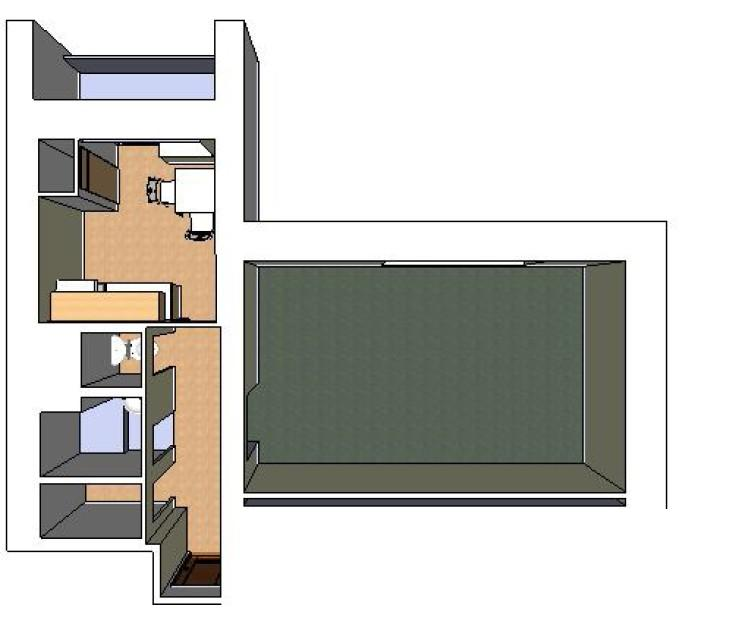

Získáte místo k bydlení na výhodném místě v centru města, které je zároveň uprostřed zeleně a velmi blízko k místům, kde se dá skvěle sportovat. Obchody i dopravní spojení i hospůdku se zahrádkou budete mít na dosah ruky. V bytě budete moci využívat všech základních služeb jako je plyn, elektřina, teplá voda a ústřední topení. V televizi si naladíte desítky programů včetně HBO, v bytě můžete mít vysokorychlostní internet (až 50Mbit) a také získáte férového pronajímatele, který bydlí jen o 2 vchody vedle.
Poblíž je 4-proudá silnice, takže pokud jsou otevřená okna, je slyšet provoz (ne moc, ale může to vadit). Byt je pod střechou, což má své výhody i nevýhody. Střecha je nová, zateplená. Byt má původní vybavení (dům byl kolaudován v roce 1989) - vzhled koupelny, kuchyně a záchodu tedy odpovídá době vzniku. Byt je nezařízený. Sousedi jsou mladá rodina, takže byt není určen pro žádné pařby a další mladické vylomeniny :).
V centru města, uprostřed přírody. Obchody, sportoviště, koupaliště, restaurace.
Víc podrobnostíOd července 2015 je možné si byt po předchozí domluvě osobně prohlédnout.
Víc podrobnostíByt se nachází v 5. patře cihlového domu na výhodném místě na rozhraní Polabin a centra města. Byt má všechna okna obrácena na jih s výhledem do zeleně směrem k řece Labe a TipSport aréně. V dosahu 5 minut chůze najdete supermarket Lidl, dětské hřiště, restauraci s venkovním posezením, zastávku MHD, meziměstskou autobusovou zastávku (Hradec, Chrudim, Bohdaneč), Univerzitu Pardubice (univerzitní kampus), les, rekreační stezky podél řeky labe.
Do centra města (Atrium palác, TipSport aréna) se dostanete pěšky za 10 minut, k Divadlu a na Pernštýnské náměstí se dostanete za 20 minut. Školky a školy jsou ve vzdálenosti 10 minut chůze (s dětmi počítejte dvacet :). V relativní blízkosti se nacházejí i další supermarkety (InterSpar, Globus, Kaufland, Tesco). Koupaliště najdete za lesem cca 15 minut chůze od domu, což je příjemné především v létě, kdy se dá rychle odskočit na večerní plavání v 50m bazénu za pár korun.
V bytě jsou všechny základní služby - plyn (nový sporák + trouba), elektřina, teplá voda a ústřední topení. Máme společnou anténu s digitálním příjmem, která je již v ceně nájmu. Díky ní si budete moci vychutnat více než 20 programů včetně několika HD a prémiového HBO / HBO2 a HBO Comedy (jen na to musíte mít připravený televizní přijímač). Do bytu je možné zaveden vysoko rychlostní internet.
K dispozici vám bude samostatná uzamykatelná sklepní kóje a společná kolárna či sušárna. Byt má vlastní malý balkón. Před domem je dostatek parkovacích míst a přestože nám tu pravidelně parkují studenti z blízké Univerzity, vždy najdete volné místo nejdále pár minut chůze od domu. Úklid společných prostor zajišťuje firma, takže vás nečeká povinný úklid přízemí :).
Byt je možné si pronajmout za 5500,- korun měsíčně. V základním nájmu jsou započteny všechny poplatky spojené s provozem domu (výtahy, správa, úklid, společná TV anténa). Navíc je třeba platit zálohy za energie - plyn, elektřina, voda, topení v ceně přibližně 1900,- korun (podle počtu obyvatel bytu).
Při podepsání nájemní smlouvy požaduji kauci ve výši 2 měsíčních nájmů - tedy 11.000,- korun. Proč požaduji vratnou kauci? Jednoduše ze stejných důvodů, proč do nákupních vozíků strkáme desetikoruny, abychom si je mohli půjčit. V případě ukončení nájemní smlouvy, vyrovnání všech nedoplatků za energie a předání bytu v pořádku zpět, Vám celou kauci do posledního halíře vyplatím.
Měsíční poplatky za internet činí od 290,- Kč za standartní připojení do 540,- Kč za vysokorychlostní.
Nájemní smlouvu uzavřeme na dobu určitou v délce 1 roku s opcí. To znamená, že máte přednostní právo na prodloužení nájemní smlouvy za obdobných podmínek dřív, než bych začal shánět jiné zájemce.
Byt je volný k pronájmu od 1. září 2015. Byt si budete moci po předchozí dohodě (viz. kontakty) prohlédnout již v průběhu července.
Rozměry pokojů bytu vycházejí takto:
Výměra bytu je tedy necelých 40m2 včetně balkónu a sklepa. Zákres bytu je ke stažení zde a zde orientační plánek: 
E-mail: novotnaci@gmail.com